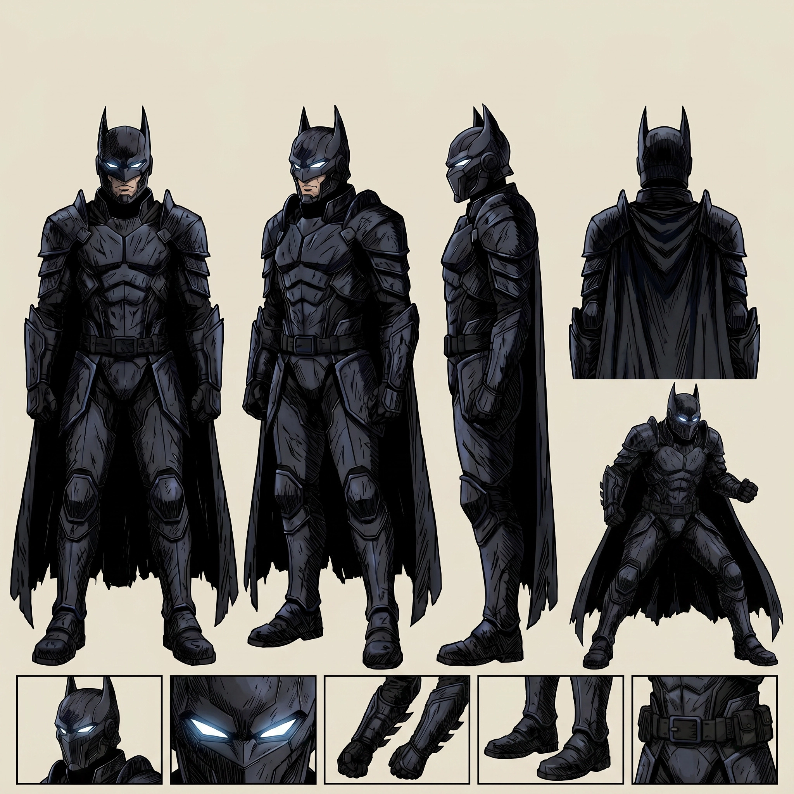

Silent Armored Knight
V7 Settei Pass

- Final design goal: one pitch-black, mobile, fear-inducing dark knight silhouette with moderate cowl fins, floor-length cape, tactical armor, and readable full-body proportions.
- Use for animation: maintain armor plate layout across front, side, back, and closeup. The cape can add threat, but must not hide the action silhouette.
- Optics rule: inactive in first reveal; white-blue tactical optics activate only later as a controlled escalation.